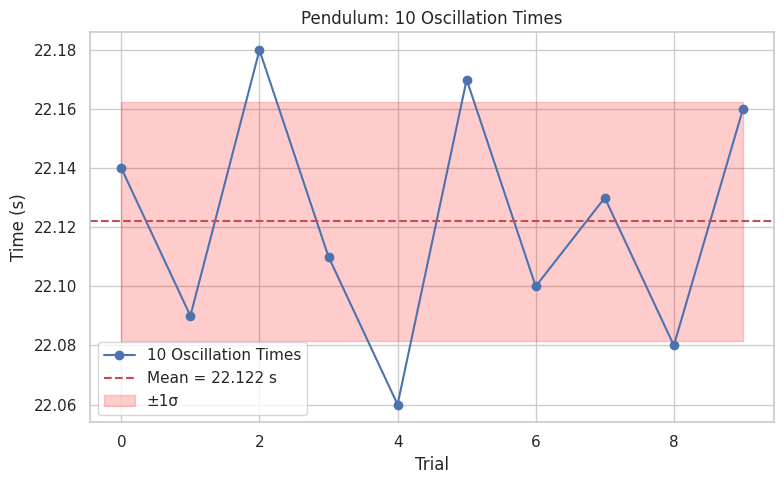

Problem 1
üìè Measuring Earth's Gravitational Acceleration with a Pendulum
üî∑ Theoretical Background
The gravitational acceleration (\(g\)) is a fundamental constant in both classical and modern physics. One of the most classical and reliable methods to measure it is using a simple pendulum.
For small oscillation angles (θ < 15°), the period of a simple pendulum is given by:
Where: - \(T\) is the period of the pendulum (time for one complete swing), - \(L\) is the length from the pivot point to the center of mass of the bob, - \(g\) is the local acceleration due to gravity.
üß™ Materials and Setup
✅ Required Materials
- A string (around 1–1.5 meters long)
- A weight (e.g., salt pack, keychain, or bag of coins)
- A stopwatch or smartphone timer
- A ruler or measuring tape

Experiment: Determining \(g\) with a Pendulum
1. Experimental Setup
- Pendulum Length (L): 1.2 m
- Weight Used: 500 g salt pack
- Measuring Tool Resolution: 1 mm
- Uncertainty in Length (ΔL): 0.0005 m (half of 1 mm)
2. Time Measurements
Each value below represents the time taken for 10 complete oscillations of the pendulum:
| Trial | Time for 10 Oscillations (\(T_{10}\)) [s] |
|---|---|
| 1 | 22.14 |
| 2 | 22.09 |
| 3 | 22.18 |
| 4 | 22.11 |
| 5 | 22.06 |
| 6 | 22.17 |
| 7 | 22.10 |
| 8 | 22.13 |
| 9 | 22.08 |
| 10 | 22.16 |
- Mean Time for 10 Oscillations (\(\overline{T}_{10}\)): 22.122 s
- Standard Deviation (\(\sigma_T\)): 0.041 s
- Uncertainty in Mean Time (\(\Delta T_{10}\)): 0.013 s (\(\sigma_T / \sqrt{10}\))
3. Period and Uncertainty
- Period (T):
- Uncertainty in T (ΔT):
4. Calculating Gravitational Acceleration
Using the formula:
\(\(g = \frac{4\pi^2L}{T^2}\)\)
Substituting values:
\(\(g = \frac{4\pi^2 \cdot 1.2}{(2.212)^2} \approx 9.65\ \text{m/s}^2\)\)
5. Uncertainty in \(g\)
Propagating uncertainty:
With values:
- \(\frac{\Delta L}{L} = \frac{0.0005}{1.2} \approx 0.00042\)
- \(\frac{\Delta T}{T} = \frac{0.0013}{2.212} \approx 0.00059\)
Then: $$ \Delta g \approx 9.65 \cdot \sqrt{(0.00042)^2 + (2 \cdot 0.00059)^2} \approx 0.011\ \text{m/s}^2 $$
- Final Result:
\(\(g = 9.65 \pm 0.01\ \text{m/s}^2\)\)
6. Analysis
- The measured \(g\) is slightly lower than the standard 9.81 m/s², possibly due to timing errors or slight violations of the small-angle approximation.
- Measurement precision affects \(\Delta L\) — using a finer ruler would reduce this.
- Human reaction time is a key source of error in \(\Delta T\), even over 10 swings.
- Assumptions Made:
- The pendulum swings in a perfect arc.
- Air resistance and pivot friction are negligible.
- The initial angle was below 15°.